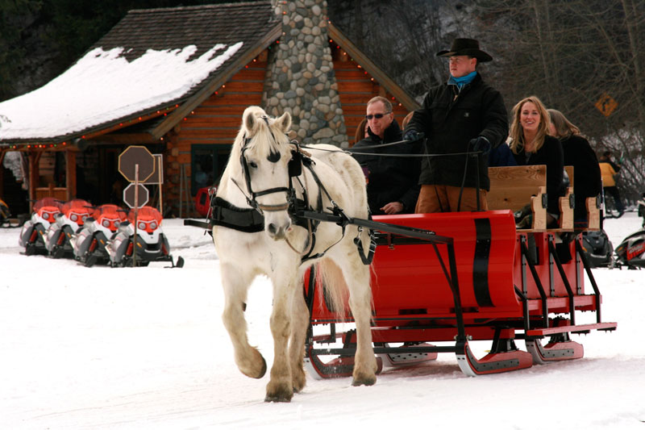
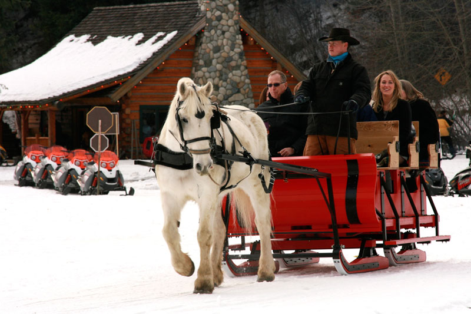
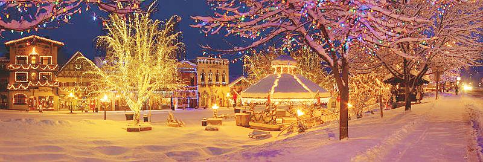
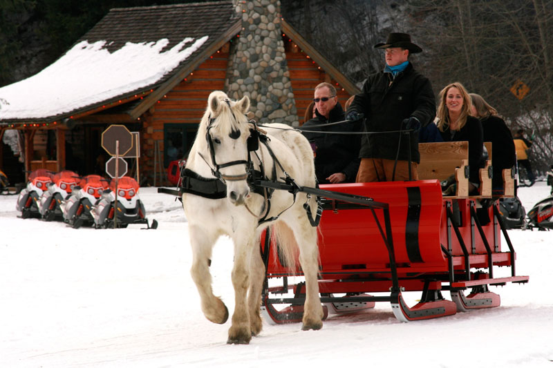

Christmas is the most wonderful time of the year, and it’s even better when you spend it in the enchanting Bavarian village of Leavenworth. Leavenworth hosts four Holiday festivals each year. Things kick off November 23-25 with Christkindlmarkt. Christkindlemarkt is an Annual Bavarian-style Christmas Market for the whole family and is held in Front Street Park and also in the Leavenworth Festhalle. This popular and celebrated northwest tradition features delicious and authentic Bavarian foods, handmade arts & crafts and other gifts, and family-friendly, Bavarian- and Christmas-themed entertainment. Christkindlmarkt is followed by Leavenworth’s grand Christmas Lighting Festival November 30, December 1-2, 7-9, 14-16. During Christmas Lighting, the quaint Bavarian village is transformed into a dazzling array of over 500,000 Christmas lights with live music, a special visit from Santa Claus, and more fun for the whole family. Leavenworth offers a wide variety of ways to celebrate the holiday season with your loved ones. Here are some fun Christmas in Leavenworth activities that you won’t want to miss during your winter getaway with us.
